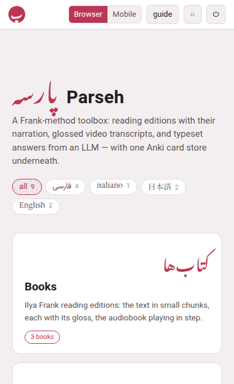
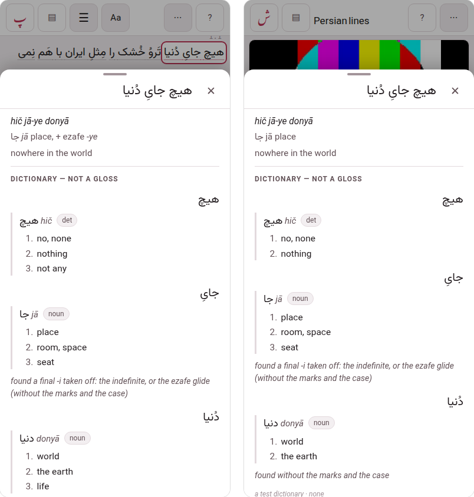

Browser and Mobile
Parseh has two interfaces, and a switch at the top of the hub picks between them.
- Browser
- is every page as it has always been, with everything that makes and changes things on it: adding a book, editing a chunk, writing a document, building a PDF.
- Mobile
- is a second set of pages made to be read on a phone: streamlined, one column, targets big enough for a finger, and no editing controls at all. It is for looking at what is there — reading a book, watching a video, reading a note, studying a deck — never for writing it.

1. The switch#
Browser and Mobile sit side by side in the hub’s top bar, the one in force filled in, and they are there in both layouts. A tap switches at once — no reload — and the choice holds: on every page, after a reload, the next time you open Parseh. Another tab open on Parseh follows the switch as soon as you make it.
The choice belongs to the browser it was made in, as the theme does: a phone can be in the mobile interface while the computer stays in the browser one.
2. The mobile hub#
The hub was the first page with a mobile version; the books and the exercise decks have theirs too (below). In the mobile interface the hub has:
- a slim top bar: پ Parseh, the switch and ◐ — nothing else;
- the name, and one line: A Frank-method toolbox: read, watch, study.;
- the language chips in a single row that scrolls sideways, which always brings the picked chip into view (with a mouse, where nothing can be swiped, they wrap into rows instead);
- the four doors, one under the other, large, each with its counts — the same counts as the browser hub’s, following the chips in the same way;
- Guide, How the toolbox works, which opens this guide;
- and As an app, which installs the mobile interface on the phone, with an icon of its own and the whole screen for the page (Parseh as an app). Inside the app it is not shown.
| Door | What it says under its name |
|---|---|
| Books | Reading editions, the narration in step |
| Videos | The transcript under the video, every line glossed |
| Studio | Notes on the language, to read |
| Exercises | Decks to study, each card when it is due |
| Guide | How the toolbox works |
| As an app | On the home screen, on the whole screen |
What it leaves out is everything that administers the toolbox: the ⏻ stop button, the Anki door, the clip tray, the dictionaries’ door, and the list of addresses at the foot. They are all still in the browser interface, one tap away on the switch. The Working… panel appears in both.
With the phone held sideways — or on a tablet, or a computer in the mobile interface — the column is wider and the doors go two to a row (Held sideways).
3. Where the doors lead#
Every mobile page is written one at a time. Until a page has its mobile version, its door opens the browser page, as it always has — that is the fallback, and nothing is ever a dead end. As the mobile versions arrive, the same doors lead to them in the mobile interface, whether you tap, open in a new tab, or long-press a link.
| Browser page | Its mobile version |
|---|---|
| the hub | done: the page above |
| the books’ library, and a book’s reader | done: the shelf, and the reader as a reader only (The books) |
| the videos, a channel, and the player | done: the channels, a channel’s videos, and the player with its transcript and glosses |
| the studio’s library, and a document | to come: the notes, to read |
| the exercise decks, a deck, and studying it | done: the decks, studying what is due, and cramming what you pick (The exercise decks) |
A few pages will stay browser pages only, because what they are for is making or administering something: adding a book or a video, the studio’s editor, the Anki sync, the clip tray, the dictionaries’ page. A link to one of them opens it in its browser version, in either interface.
4. The books#
The Books door opens the shelf: every book, grouped by language under the chips, which filter it as the hub’s do. A book’s card says what the library’s says — its title and author in the book’s own script, the title in Latin letters, a few lines about it, how many chapters, and whether it is narrated — and the whole card opens its reader. A book read on this phone says how far you have got (read on · 40%, and a line along the foot of its card) and opens where you stopped. A book whose reader has never been built opens nothing: it is built in the browser interface, from its card in the library.
The reader is the same page in both interfaces — the text, the passes, the glosses, the narration in step — with its header laid out again for a thumb:
| Button | What it does |
|---|---|
| پ | the hub |
| ▤ | back to the shelf |
| ☰ | the contents, to jump to a paragraph |
| Aa | the size of the text and the glosses |
| ⋯ | the rest, a group to a line |
The narration is not in the header. On a narrated book three buttons float at the foot of the screen, in the corners a thumb reaches without shifting its grip:
| Button | Where | What it does |
|---|---|---|
| ↺ 10 | the left corner | the narration back ten seconds |
| ⏯ | the right corner | play the narration, and pause it |
| 10 ↻ | the right corner | the narration on ten seconds |
| 1.5× | over them | how fast it plays |
They fade to a whisper a few seconds after you stop touching the screen, so they are never bright over what you are reading, and come back whole at the first touch. ↺ and ↻ take the reading place along: the mark moves to the subparagraph the narration lands in, and playing stops at that one’s end, as always.
Hold ↺ or ↻ to choose how far they move — 1 · 2 · 5 · 10 · 15 · 30 · 60 seconds; one and two are there for going back over the phrase you have just heard — and tap the speed chip to choose how fast the narration plays — 0.5 · 0.6 · 0.75 · 0.9 · 1 · 1.1 · 1.25 · 1.5 · 1.75 · 2. Both are kept for every book on this phone. The seconds are under ⋯, Listening, as well, since a hold is not something you can see.
Under ⋯: the passes (and gloss and hover — in hover mode a tap on a chunk opens its gloss), the listening (continuous, loop, stop at a change, how far ↺ and ↻ move, where the narration has got to — 0:12 / 3:40 —, listening without following the text), looking a word up where a dictionary is installed, and this page: the theme, putting the bars away, and the Browser | Mobile switch.
The gloss cloud has a dictionary button beside copy. A chunk that has a gloss never opens the dictionary by itself, and the header’s switch for it is under ⋯: dictionary, in the cloud, opens the dictionary for that chunk, in a sheet from the foot of the screen (The dictionary, on a phone, below). A video’s cloud has the same button.
The header slides away as you read down and comes back on the smallest move up — held sideways too — and stays put while ⋯ is open. The floating buttons stay wherever the page goes, and step aside while ⋯ is open.
The phone goes on where the computer stopped. Parseh keeps the reading place of each book, the narration’s speed, the pause between repetitions, how far ↺ and ↻ move and the theme — so a book opened on the phone is the book you were reading, at the speed you read it. It never moves you without asking: the book opens where this device left it, and a line at the foot says “On the computer you were at 2.1, a moment ago” with Go there and Stay here. What is shown — which passes are open, the size of the text, the margins — stays with the device showing it, because a phone is not a desk.
A finger held on a word for half a second opens a small menu: Copy “the chunk” and Copy the sentence — and, in the browser interface, Card for “word”, which opens the card just as an Alt-click does on a computer. It works in a video’s transcript too. A plain tap still plays, as it always did.
? in the bar is there on a phone and on a tablet, where a mouse cannot rest on a button to read what it does. Press it, then tap anything: the page says what that button does instead of pressing it. Press ? again, or done explaining, and everything works as usual.
Keep a book on this phone — under ⋯, Keep on this phone. It says what the text costs, and lists the recordings so you pick the ones you want (a narrated book can be hundreds of megabytes). Each one says where it is in the book — chapter 2 · Sustainability · Water Resources, or chapters 1-6 where it runs across several — with the paragraph numbers under it in small print, so you can choose the two you want for a journey without knowing the book by its paragraph numbers. The lines are a little narrower than the sheet and sit against its left: the strip down the right is there to scroll with your thumb, since a finger drawn across the lines themselves ticks every one it crosses. Once it is kept, the book opens and plays with the computer asleep, off, or a train away: the text, the glosses, the narration — and ↺ and ↻ still move it, which is the hard part. Looking a word up and the translation still need the computer, and say so at once rather than hanging.
On Android, in Chrome, the phone brings the book by itself. Press Keep it — or Save, or Keep it again — and the book comes by the phone’s own download, the text first, then the recordings, with Android’s notifications saying how far each has got: the book’s title, then — its text, coming onto this phone, and after it — its recordings, coming onto this phone. The button says Keeping… 43% — you can leave this page, and you can: go to another page, close Parseh, lock the phone. Come back to the book and its button says how far it has got. Cancel on the notification — either of the two — stops the whole keep, and what had come stays on the phone: the page says …: stopped from the notification — what had come is on this phone. A first keep cancelled before anything had come leaves the book not kept (— nothing of it had come yet), and its button reads Keep on this phone again.
A second book pressed while one is coming waits for it and says so — Waiting for … with the first one’s title, — you can leave this page — and starts by itself. And since a download is on the phone twice for a moment, until it is put away, a book that needs more room than the phone has free says so before anything starts — Needs about 980 MB free while it arrives; this phone has 600 MB — with Keep it anyway and Not now.
If it finishes while Parseh is closed, the notification says so — … is on this phone now — a tap on it opens the book, and the next Parseh page you open says it once, at its foot. A keep that stops part-way keeps what had come and says why, each reason in its own words (Troubleshooting).
On the iPad, and in any browser without that download (Firefox among them), keeping is as it always was: the button says Keeping… 43%, and you stay on the page until it says the book is on this phone. A video, a deck and a document are kept that way everywhere.
Kept, there are two buttons side by side: Change what is kept and Remove from this phone, half the line each. Change what is kept opens the same list, and before it draws a tick it looks at every file on the phone — not at a list of what was fetched once, at the files themselves — and says so: Looked at file by file: what is ticked is whole on this phone. If a download was cut off, or the computer handed the phone a refusal instead of the file, that line is not ticked, its line says kept, but no longer whole — tick it to fetch it again, and the line over the list says what Save will do about it. Tick it and Save fetches it again, whole.
When Parseh is updated on the computer, the app finds out the next time it reaches the computer and says so in one line at the foot of the page: Parseh was updated to, and the new version’s number (if you went back to an older version, it says went back to instead). Nothing reloads under your thumb, and nothing you kept is lost. An update changes some of Parseh’s own files, so the list may say 2 of its files were updated on the computer since they were kept: that is not damage, the copies on the phone are whole, and nothing is downloaded again for them — each is brought up to date the next time a page uses it with the computer there. Only a file that is really damaged is called no longer whole.
Your notes come with it. On that same list, above the recordings, is one line for all of them — its notes · 34 · about 280 kB — ticked to begin with, and unticked with a tap if you would rather keep the book alone. Kept, the marks are in their seams and a note opens away from the computer looking as it looks at the desk, in the studio’s own face and colours; one that holds an exercise can be answered there too. The pictures in your notes come with them; their recordings are a line of their own further down, beside the narrations, so nothing heavy is kept by surprise. Write a note at the desk afterwards and its mark is on the phone as soon as the two can reach each other — and the book says it is out of date, so the note itself is one tap away. Delete one at the desk and the phone gives its room back the next time you press Save on that list, which says how many first. A video’s notes work the same way, from the video’s own page. A book kept with that line unticked says its notes need the computer, rather than opening an empty frame (Notes in the seam).
Keep a deck on this phone and cramming works anywhere. Keep on this phone, on the deck’s page, brings the deck’s exercises themselves — with their pictures and their recordings — and not only its pages: one tick, nothing to choose. On the train, Cram all shows an exercise, takes your answer and brings the next, exactly as it does at the desk.
Studying a deck away from the computer works differently, because studying writes: a deck is taken out. A deck that was only kept says so the moment you press Study — Studying needs the computer, and this deck is not out — with Cram this deck beside it, rather than leaving you waiting on a page that will never load. On the deck’s page, press Take it out — the deck comes onto the phone with everything due, and the computer will not study or edit that deck until it comes back (it can still cram it). Study it on the train; every answer is kept on the phone and sent as soon as the computer can be reached, where it is scheduled for real. The deck stays yours until Give it back.
If the phone is lost or will not come back, the computer’s Take it back frees the deck. After that, whatever that phone had not sent cannot be applied — the deck lists it instead, so you can see what was lost.
Kept on this phone (in the hub, or from the offline chip that appears when the computer cannot be reached) lists everything kept, what each takes and how much room is left, opens each, and gives the room back with Remove from this phone. A book still coming onto the phone is there too, as coming — 43%, with Stop in place of Remove: it does what Cancel on the notification does — the whole keep stops, and what had come stays (…: stopped on this phone — what had come is on this phone).
Offline means the computer is really gone. A slow answer is not offline: while one is a few seconds late, a quiet checking… stands where the chip would, and everything goes on as usual. Parseh calls the computer offline only when it is sure — at once when the phone has no network, within a few seconds when the computer refuses (Parseh not running on it, say), and after 45 seconds of silence when it answers nothing at all, which is what a computer that is off or asleep looks like over Tailscale.
Parseh remembers that the computer was away. Open a page after one that said offline and it starts offline too — the chip is there from the first moment, nothing you cannot open looks as though you could, and the numbers the clock has made wrong stay hidden. It still asks, every time, and puts itself right at once if the computer turns out to be there; and it does not believe a memory more than a few minutes old.
Refreshing always asks again. A page that went offline stays offline while you use it — a book does not change under you halfway through. To look again, refresh it: press ↻ beside the offline chip, or pull the page down from the top. In the app on Android the pull is the only refresh there is; on an iPhone or an iPad ↻ is. A refreshed page never takes up what the page before found: if the computer is back it opens online, and if it is not it says checking… until it knows.
What writes the book is not there: book info, building the PDF or the reader, the narration’s panel, folding, the timings, the download, the pencil over a chunk, glossing with an LLM, making a card, writing a note between two lines, naming a chapter. The notes that are there open to be read. On a computer in the mobile interface, an Alt-click on a word makes no card and E opens no editor; switch to Browser and they do again, on the same page.
5. The videos#
The Videos door opens the channels, one card each under its language, saying how many videos the channel holds and how many are glossed to the end — and the videos are one tap inside, on the channel’s own page, exactly as they are in the browser interface. It was one long list of every video of every channel before, which on a phone is a page you scroll past rather than one you choose from.
A video opens the player: the video at the top, its transcript under it, every phrase glossed, the caption being said kept in view, and the same dock at the foot as a narrated book has — ↺, ⏯, ↻ and the speed. Hold ↺ or ↻ to choose how far they move, 1 · 2 · 5 · 10 · 15 · 30 · 60 seconds, the same choice a book gives. Held sideways, the video goes to the left and the transcript to the right, with a divider you can drag; ⛶ gives the video the whole screen with the line being said lying over its foot. A tap on a phrase of that line opens its gloss.
A phrase’s cloud has dictionary beside copy, as a book’s has, and on the whole screen too: the dictionary’s sheet then covers the subtitles while it is up, the video waits, and going back closes the sheet and leaves the video on the whole screen (The dictionary, on a phone). A phone’s cloud has no colour marks, and its transcript no + between two captions to write a note there: both write into the video, which is the browser interface’s to do.
The lines around it. Beside the ⛶ that leaves the whole screen, a second button — three bars, the middle one bright — shows the caption before the one being said above it, and the caption after it below, in the same cloud, which grows for them. They are a little smaller and a little greyer than the line being said, and every phrase in them opens its own gloss at a tap (with a mouse, as the pointer rests on it). Press it again for the one line. The choice is kept for every video on this phone.
With the computer away, the shelf still opens and shows the channels it last knew. A channel Parseh has not had a chance to put on this phone is drawn but cannot be tapped, and says so.
6. The dictionary, on a phone#
On a phone the dictionary opens in a sheet that rises from the foot of the screen, as Keep on this phone does — in a book and in a video alike — and never inside the gloss cloud, where it used to be a small box scrolling inside the page, over the very word it was about.

- What opens it.
- The dictionary button in a chunk’s gloss cloud; and, with the dictionary switched on (under ⋯, Looking a word up), a tap on a chunk that has nothing written under it — no meaning, no transliteration, no vocabulary — which opens the sheet at once, with no cloud. A chunk with anything written opens its cloud, with dictionary beside copy.
- What is in it.
- At the top, the chunk you looked up, in its own language’s type, then its gloss where it has one, then the dictionary’s entries — each word, each headword with its romanisation and its part of speech, and the senses numbered, one to a line — then, where they are installed, a machine’s reading and a sentence somebody translated. Persian, Arabic and every other language are set in their own type and their own direction. Where nothing is set up to look the book’s language up with, the sheet says so and links to where one is set up.
- How tall it is.
- As tall as the entry, up to most of the screen — always, even under a video pinned at the top; a longer one scrolls inside the sheet, and the page under it does not move. It opens saying looking it up… and grows when the answer comes.
- The word you tapped stays marked.
- Where there is room above the sheet — under the header, and under the video where it stands above the transcript — the page moves so the word sits there. Where there is not (a long entry under an upright video, or a phone held sideways), the sheet covers it, and closing the sheet shows it again where it was.
- Closing it.
- Swipe it down, tap beside it, press ✕, or go back — the phone’s back gesture or button. Nothing is left open: the sheet and the chunk’s cloud both close, and one going back undoes one thing.
- In a video, or a book read aloud.
- The video, or the book’s narration, waits, paused, while the sheet is up, and goes on when it closes. On the whole screen the sheet covers the subtitles, and going back closes the sheet and leaves the video on the whole screen. On an Android phone in a browser tab, going back also makes the browser give up its own full screen: the sheet closes, the video stays over the page, and going back once more leaves it.
The gloss cloud is the gloss, as it always was. A glossed chunk opens its reading, transliteration, vocabulary and meaning beside the word, and a chunk nobody asks the dictionary about looks and answers exactly as before.
Few glosses, and which ones. In a book or a video where fewer than half of all the chunks have anything written under them, a tap does one of two things — a glossed chunk opens its gloss, any other, with the dictionary switched on, opens the dictionary — so on a phone the glossed chunks are marked. Where every phrase already has a faint dotted line (a video’s transcript; a book’s first pass in hover mode), the glossed ones have it darker. Elsewhere in a book, every pass and every chapter as it arrives, the glossed chunks get a faint dotted line, in the theme’s quietest ink. Over the whole-screen subtitles, the glossed phrase’s line is almost white. A book is counted whole, not by the chapters on the screen: one glossed from the front is still a book with few glosses. The text and its colour are not changed. A book or a video glossed half or more looks as it always did, and the browser interface never shows the mark.
7. The exercise decks#
The Exercises door opens the decks, one to a line (two, held sideways), each saying what is due in it, with its two buttons: Study and Open.
A deck’s page says what is in it and what is due, and has two buttons:
- Study now
- , for what is due;
- Cram all
- : every exercise of the deck, in random order, until each is right — the scheduling as it was. It is the way to practise when nothing is due.
While studying or cramming with the phone held sideways, the buttons stand in a column down the right — Skip at the top, the answer’s button at the foot, where the thumb is. A long exercise need not be reached for across the screen: drag a finger up or down the empty part of that column and the exercise scrolls, flying on as it does elsewhere on a phone. The buttons do not move, and a tap on one is still a tap. A small grip in the middle of the column shows it can be dragged, and it is there only when there is something to scroll.
Under them, Cram a few: the deck’s exercises, to pick the ones to cram. Filter them by their text, their type, their state (new, learning, review, due now) or a tag, and pick with Select all, Select shown (the ones the filters leave), Deselect shown, Select by tag or one by one, with the box beside each; a tap on the rest of an exercise shows it solved. While anything is picked, Cram N exercises waits at the foot of the screen: that is a cram of your own — a tag, the ones you keep getting wrong, the ones with a word in them — and like every cram it leaves the scheduling as it was.
Studying, the exercise has the screen: no bar over it, only the deck’s name and what is left, with ‹ back to the deck. Check or Show answer answers it, and then Next takes its very place: it rates the exercise as the answer says — Good when it was right or a card was turned, Again when it was wrong, the label saying which and when it comes back — so you go through a deck tapping one spot. The four ratings are beside it for any other. With the phone upright they are a bar at the foot of the screen; held sideways, a column down the right edge, where the thumb holding the phone is, and the exercise has the whole height beside it. Cramming works the same way: Check then Next exercise, Show answer then Wrong or Correct, with Skip beside them — and at the end, the exercises you got wrong at least once and the ones you skipped, each shown solved at a tap (Cram mode). The answers and blocks inside an exercise are big enough for a finger, and the arrows move a block where a mouse would drag it. A blank, and a matching exercise’s box, are filled from a cloud: tap the blank or the box, and a cloud offers the words the bank below holds — tap one and it is in; tap a filled one to change it or empty it. The browser interface has the same cloud, and dragging beside it; here the cloud is the only way, and the bank’s words are there to be read (Placement, Matching).
Making a deck, adding, correcting, tagging or moving an exercise, setting one back to new, the deck’s options, exporting, importing and backing up are the browser interface’s; so is the server’s stop button. ◐ at the top of the decks and a deck turns the theme for the whole toolbox — in the studio too.
8. Held sideways#
A phone is held sideways as often as upright, and a sideways screen is short and wide, so the mobile interface uses the width to spare the height: the column widens, the hub’s doors, the shelf’s books and the decks go two to a row, a reader’s buttons take one line, and studying puts its buttons down the right edge. Every bar slides away as you scroll down and comes back on the smallest move up. A tablet, and a computer in the mobile interface, get the same wider layout.
9. Parseh as an app#
Installed as an app, the mobile interface opens from an icon on the phone’s home screen, on the whole screen: no address bar over the page, no browser around it. It is still Parseh on your computer — the app opens wherever the computer can be reached, at home or anywhere over Tailscale, and says Parseh cannot be reached when it cannot (the computer asleep or off), with Try again.
The mobile hub’s As an app door opens the page that installs it. Its top line says where the phone stands, and it has two steps:
This phone trusts Parseh. Parseh makes its own certificate — that is the warning a browser shows the first time — and an app, unlike a browser tab, does not go on past it. Download the certificate, then:
- Android: open Settings, search for CA certificate (under Security, Encryption & credentials, Install a certificate), choose CA certificate, Install anyway, and pick Parseh-CA.crt from the downloads. Close the tab and open Parseh again.
- iPhone, iPad: allow the download; in Settings, open Profile Downloaded and Install it; then General, About, Certificate Trust Settings, and turn on full trust for Parseh local authority.
It is told once: every certificate Parseh makes afterwards is trusted too. It can vouch for your computer and nothing else — only its own name and its local and Tailscale addresses — and it comes off the phone in the same settings it went on in.
Install it. On Android, in Chrome: Install Parseh on that page, once the browser offers it, or the browser’s ⋮ menu, Install app. On an iPhone, in Safari: the Share button, Add to Home Screen.
The icon is on the home screen the moment you press it. Parseh then fetches the pages it needs to open with the computer away — the hub, the shelves, their sheets and scripts — and a line under that step counts them as they come: Getting ready — 12 of 46. It says Ready when they are all there, so it is worth staying on the page until it does. The mobile hub shows the same line, at the foot of the page under the doors, and shows nothing once there is nothing left to fetch — so it never pushes the doors down and lets them spring back under your thumb.
The app opens on the mobile hub, in the mobile interface. The Browser | Mobile switch is there as everywhere, and the next time the app opens it is the mobile interface again.
10. What it is not#
It is not a lock. Nothing is refused in the mobile interface. A browser page reached by its address or a bookmark opens and works as it always does, editing and all; the mobile pages simply do not show what edits.
It is not the way pages fit a small screen. Every page already adapts to a phone’s width, in either interface: the top bar slides away as you scroll down and comes back on the smallest move up, and the layouts rearrange themselves for the narrow screen. That goes on exactly as before, whichever interface you are in (in the mobile interface the bars slide away on a wide screen too, a phone held sideways among them). The mobile interface is a choice you make, not a width.